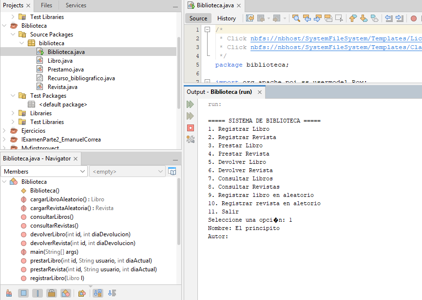
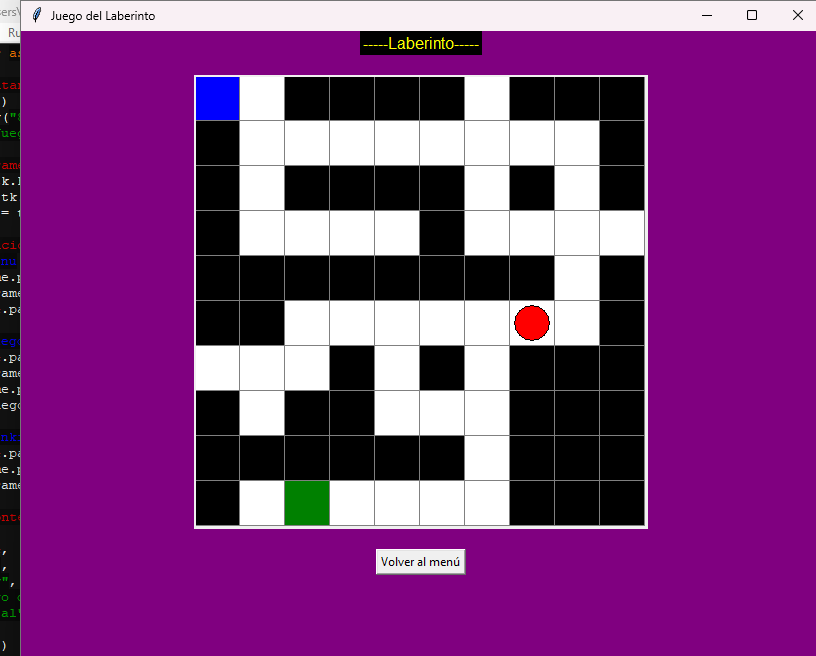
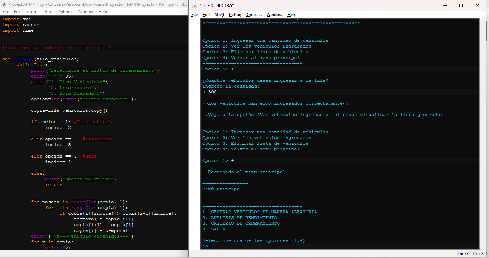
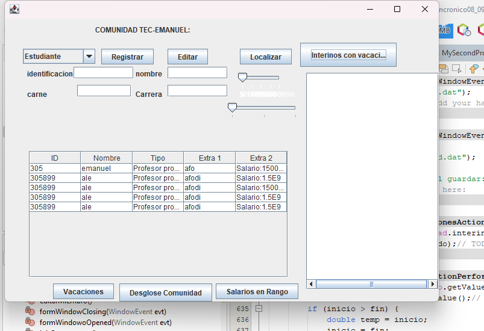

Un sistema que funciona como el registro de prestamos y devoluciones de una biblioteca que permite llevar el registro en Excel. Desarrollado en java
Desarrollador Web en formación.
Aqui podras ver diferentes proyectos y una demostracion de diferentes habilidades desarrolladas en mi tiempo como estudiante y futuro tecnico.
Soy un estudiante en formación en desarrollo de aplicaciones de software con experiencia en varios lenguajes de programación. Actualmente tengo 19 años, cuento con una buena organización y experiencia trabajando en equipo en proyectos programados. Siempre he sido una persona creativa y con mucha curiosidad por aprender nuevas habilidades.

Un sistema que funciona como el registro de prestamos y devoluciones de una biblioteca que permite llevar el registro en Excel. Desarrollado en java

Un juego del laberinto que escala una matriz con tk inter para simular el mapa, teniendo varios niveles, dificultades y tiempo.

Es una simulacion de un trafico vehicular que va llevando el registro de los vehiculos mientras usa diferentes metodos de ordenamiento para medir el tiempo simulando la eficiencia de diferentes ordenamientos para los vehiculos y el trafico.

Un sistema que simula una base de datos donde se puede ingresar personas, estudiantes y funcionarios del tec, y se les permite ver datos coomo consultar vacaciones entre otros
Email: emac6940@gmail.com
Datos complementarios o enlaces externos.
GitHub Instagram